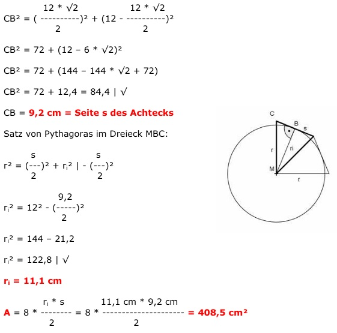

Aufgabe 97 Einem Kreis mit dem Radius 12 cm ist ein regel- mäßiges Achteck einbeschrieben. Wie groß sind dessen Seiten, Fläche und Radius des einbeschriebenen Kreises? Satz von Pythagoras im Dreieck MAC: AC2 = r2 + r2 AC2 = 2r2 |√ AC = r * √2 Satz von Pythagoras im Dreieck MAD: r2 = MD2 + AD2 | -AD2 MD2 = r2 - AD2 AC MD2 = r2 - (----)2 2 r * √2 MD2 = r2 - (--------)2 2 r2 r2 MD2 = r2 - --- = --- | √ 2 2 r r * √2 r MD = ---- = --------- = --- * √2 √2 √2 * √2 2 Satz von Pythagoras im Dreieck DBC: CB2 = CD2 + DB2 AC CB2 = (----)2 + (MB – MD)2 2 r * √2 r * √2 CB2 = (--------)2 + (r - --------)2 2 2 12 * √2 12 * √2 CB2 = ( ----------)2 + (12 - ----------)2 2 2 CB2 = 72 + (12 – 6 * √2)2 CB2 = 72 + (144 – 144 * √2 + 72) CB2 = 72 + 12,4 = 84,4 | √ CB = 9,2 cm = Seite s des Achtecks  Satz von Pythagoras im Dreieck MBC: s s r2 = (---)2 + ri2 | - (---)2 2 2 9,2 ri2 = 122 - (-----)2 2 ri2 = 144 – 21,2 ri2 = 122,8 | √ ri = 11,1 cm ri * s A = 8 * -------- = 2 11,1 cm * 9,2 cm = 8 * ------------------ = 408,5 cm2 2